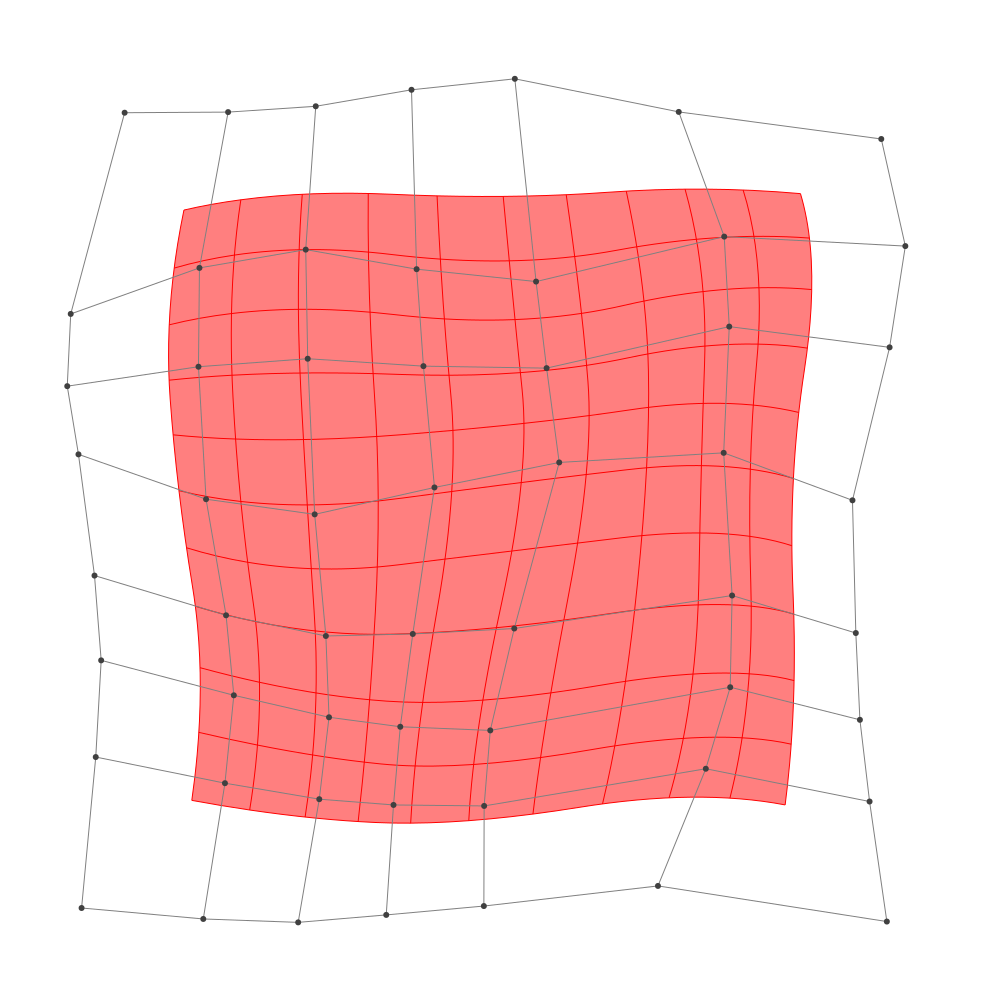
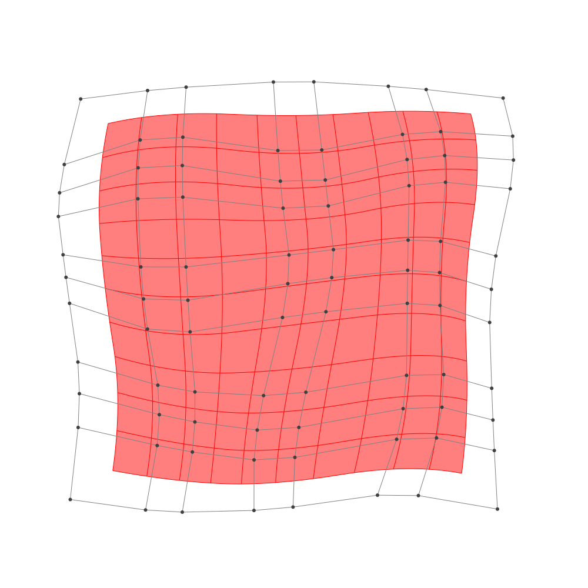

Refinement
BasicBSpline.refinement — FunctionRefinement of B-spline manifold with given B-spline spaces.
julia> p = 2 # degree of polynomial2julia> k = KnotVector(1:8) # knot vectorKnotVector([1.0, 2.0, 3.0, 4.0, 5.0, 6.0, 7.0, 8.0])julia> P = BSplineSpace{p}(k) # B-spline spaceBSplineSpace{2, Float64}(KnotVector([1.0, 2.0, 3.0, 4.0, 5.0, 6.0, 7.0, 8.0]))julia> rand_a = [SVector(rand(), rand()) for i in 1:dim(P), j in 1:dim(P)]5×5 Matrix{StaticArrays.SVector{2, Float64}}: [0.315831, 0.419984] [0.552005, 0.936029] … [0.746192, 0.372827] [0.188253, 0.251448] [0.616462, 0.377887] [0.338323, 0.382315] [0.145199, 0.417217] [0.0616945, 0.0541099] [0.466169, 0.748698] [0.0796967, 0.640722] [0.877152, 0.593739] [0.287378, 0.380954] [0.368504, 0.28451] [0.0805017, 0.284994] [0.312831, 0.110012]julia> a = [SVector(2*i-6.5, 2*j-6.5) for i in 1:dim(P), j in 1:dim(P)] + rand_a # random5×5 Matrix{StaticArrays.SVector{2, Float64}}: [-4.18417, -4.08002] [-3.94799, -1.56397] … [-3.75381, 3.87283] [-2.31175, -4.24855] [-1.88354, -2.12211] [-2.16168, 3.88231] [-0.354801, -4.08278] [-0.438305, -2.44589] [-0.0338311, 4.2487] [1.5797, -3.85928] [2.37715, -1.90626] [1.78738, 3.88095] [3.8685, -4.21549] [3.5805, -2.21501] [3.81283, 3.61001]julia> M = BSplineManifold(a,(P,P)) # Define B-spline manifoldBSplineManifold{2, (2, 2), StaticArrays.SVector{2, Float64}, Tuple{BSplineSpace{2, Float64}, BSplineSpace{2, Float64}}}((BSplineSpace{2, Float64}(KnotVector([1.0, 2.0, 3.0, 4.0, 5.0, 6.0, 7.0, 8.0])), BSplineSpace{2, Float64}(KnotVector([1.0, 2.0, 3.0, 4.0, 5.0, 6.0, 7.0, 8.0]))), StaticArrays.SVector{2, Float64}[[-4.184169203925832, -4.080015906694963] [-3.947994840473192, -1.563971418634274] … [-4.387853081336837, 1.50566018731495] [-3.7538082984212737, 3.872826682951744]; [-2.3117468928755796, -4.248551816893721] [-1.883537658382, -2.122113190845057] … [-2.338904591924134, 2.3372343456089872] [-2.1616772850424835, 3.882314890899419]; … ; [1.5796967352126514, -3.859278267207491] [2.3771523015273863, -1.9062612359031041] … [2.3224271558268406, 2.4138373946696965] [1.7873783824911347, 3.880953695111132]; [3.8685036371114805, -4.215490361266718] [3.5805016987648037, -2.2150060043659296] … [4.095836016861459, 2.3501872791643157] [3.8128307348702477, 3.6100116723660847]])
h-refinemnet
Insert additional knots to knot vector.
julia> k₊=(KnotVector(3.3,4.2),KnotVector(3.8,3.2,5.3)) # additional knotvectors(KnotVector([3.3, 4.2]), KnotVector([3.2, 3.8, 5.3]))julia> M_h = refinement(M,k₊=k₊) # refinement of B-spline manifoldBSplineManifold{2, (2, 2), StaticArrays.SVector{2, Float64}, Tuple{BSplineSpace{2, Float64}, BSplineSpace{2, Float64}}}((BSplineSpace{2, Float64}(KnotVector([1.0, 2.0, 3.0, 3.3, 4.0, 4.2, 5.0, 6.0, 7.0, 8.0])), BSplineSpace{2, Float64}(KnotVector([1.0, 2.0, 3.0, 3.2, 3.8, 4.0, 5.0, 5.3, 6.0, 7.0, 8.0]))), StaticArrays.SVector{2, Float64}[[-4.184169203925832, -4.080015906694963] [-4.042464585854248, -2.570389213858549] … [-4.292746363899502, 1.860735161660469] [-3.7538082984212737, 3.872826682951744]; [-2.967094701743168, -4.189564248324155] [-2.7504964839656174, -2.8318838416724317] … [-3.0054695496945523, 2.321104984392823] [-2.71892313972506, 3.8789940181177327]; … ; [1.5796967352126514, -3.859278267207491] [2.0581700750014926, -2.6874680484248588] … [2.242169839826485, 2.6339048397359113] [1.7873783824911347, 3.880953695111132]; [3.8685036371114805, -4.215490361266718] [3.6957024741034745, -3.015199747126245] … [4.053385224562778, 2.539160938144581] [3.8128307348702477, 3.6100116723660847]])julia> save_png("2dim_h-refinement.png", M_h) # save image

Note that this shape and the last shape are identical.
p-refinemnet
Increase the polynomial degree of B-spline manifold.
julia> p₊=(1,2) # additional degrees(1, 2)julia> M_p = refinement(M,p₊=p₊) # refinement of B-spline manifoldBSplineManifold{2, (3, 4), StaticArrays.SVector{2, Float64}, Tuple{BSplineSpace{3, Float64}, BSplineSpace{4, Float64}}}((BSplineSpace{3, Float64}(KnotVector([1.0, 2.0, 3.0, 3.0, 4.0, 4.0, 5.0, 5.0, 6.0, 6.0, 7.0, 8.0])), BSplineSpace{4, Float64}(KnotVector([1.0, 2.0, 3.0, 3.0, 3.0, 4.0, 4.0, 4.0, 5.0, 5.0, 5.0, 6.0, 6.0, 6.0, 7.0, 8.0]))), StaticArrays.SVector{2, Float64}[[-3.8050537749275932, -3.495327680630086] [-3.670963687281192, -2.269772591767409] … [-3.9068845322072416, 2.201793923008723] [-3.6279302637522863, 3.316870008298257]; [-2.5247664223872666, -3.672619264431262] [-2.3266647110605545, -2.5769327962392596] … [-2.6170551186044255, 2.619162370147021] [-2.4903733421607743, 3.4602098053211003]; … ; [2.115301047746916, -3.4284148864914163] [2.4235740388491642, -2.447950760372855] … [2.494734918138038, 2.7613709543941725] [2.2482141557488924, 3.4776547790115844]; [3.460262731569234, -3.6579783949315012] [3.4067165544510107, -2.661691826947472] … [3.7190147407185323, 2.6843888928506408] [3.556508475444219, 3.3315754150548313]])julia> save_png("2dim_p-refinement.png", M_p) # save image

Note that this shape and the last shape are identical.